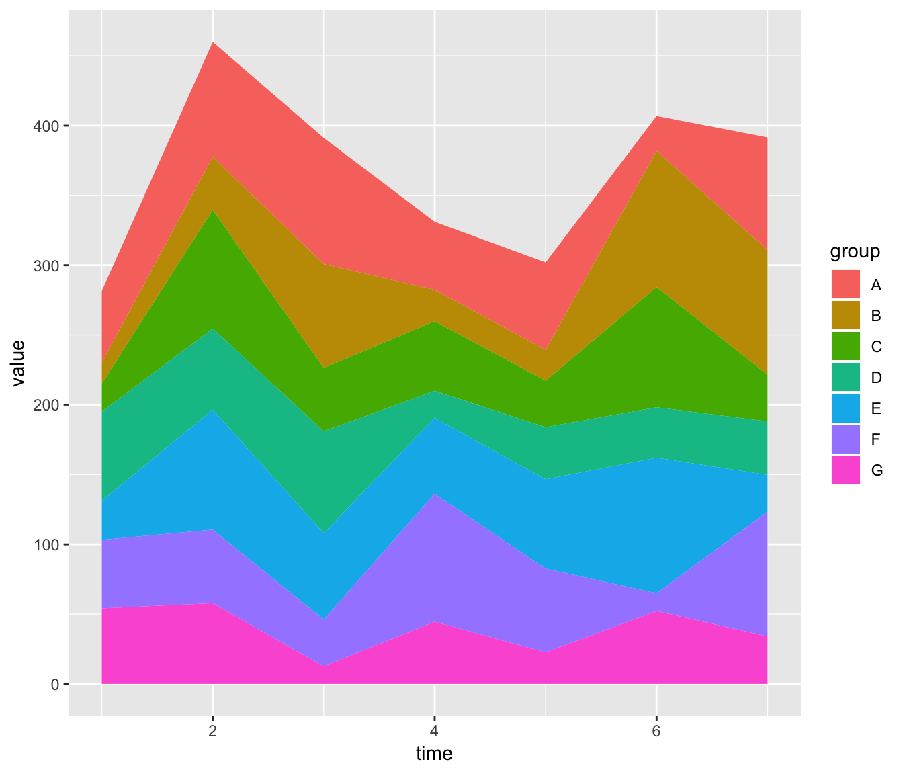
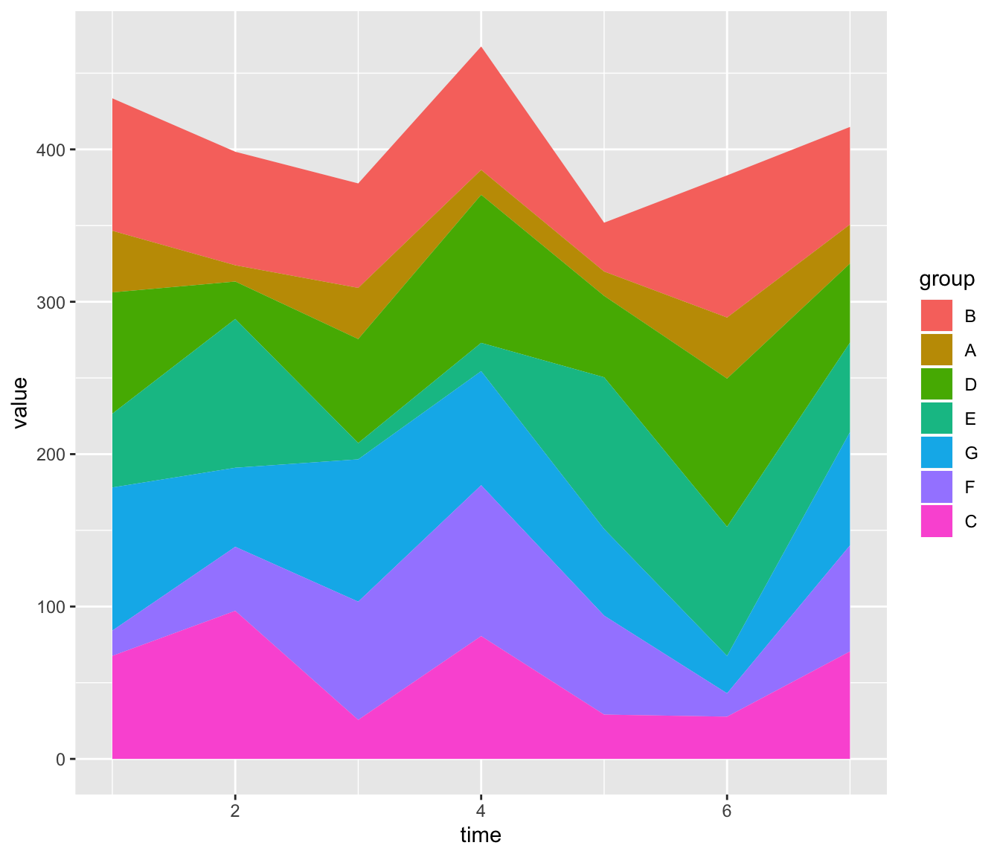
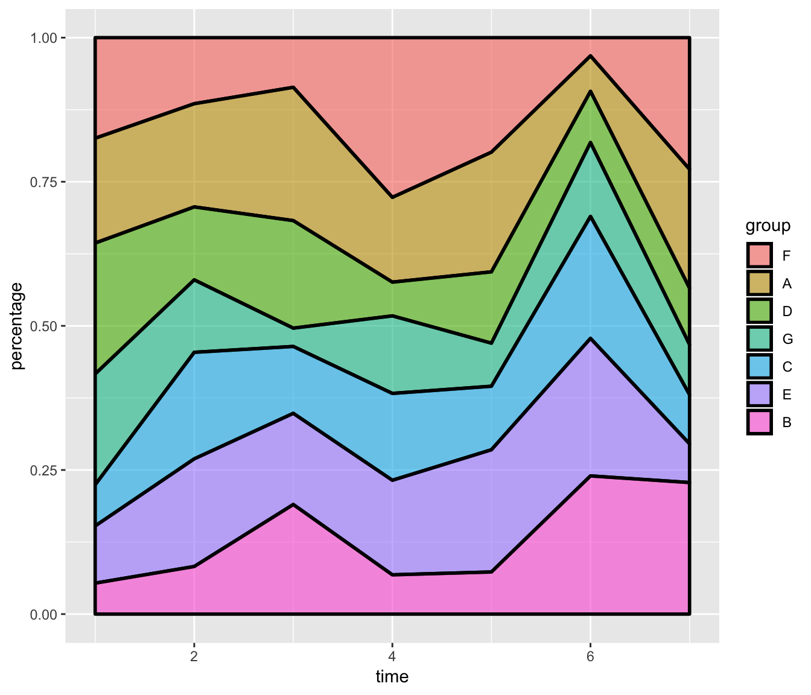
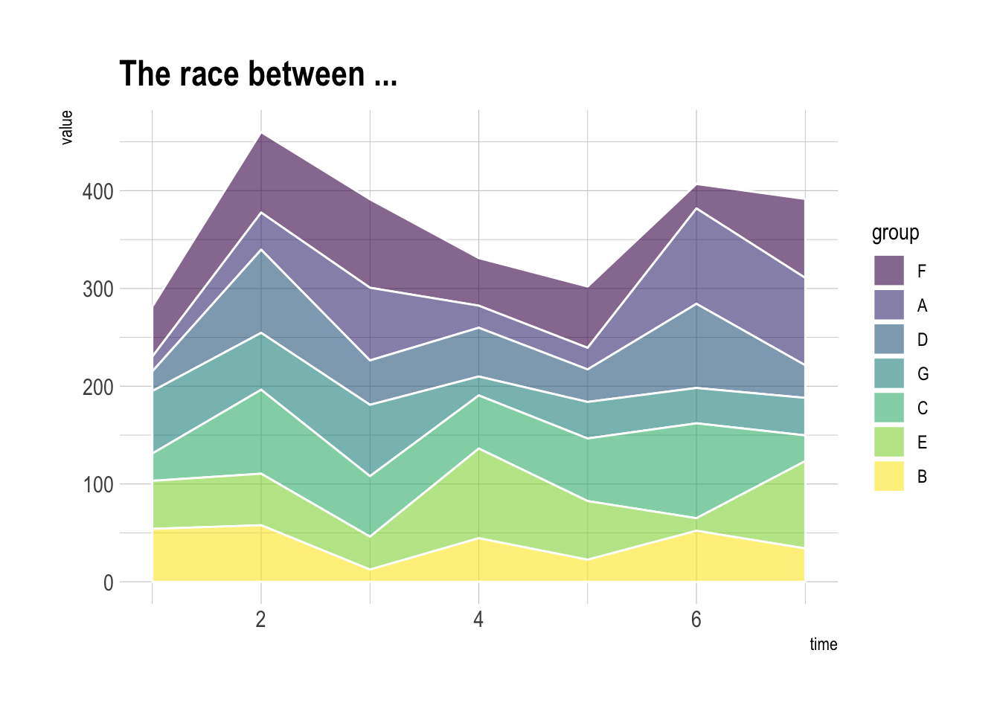

Related chart types

Map

Choropleth

Hexbin map

Cartogram

Connection

Bubble map
This post provides the basics concerning stacked area chart with R and ggplot2. It takes into account several input format types and show how to customize the output.
The data frame used as input to build a stacked area chart requires 3 columns:
x: numeric variable used for the X axis, often it is a time.y: numeric variable used for the Y axis. What are we looking at?group: one shape will be done per group.The chart is built using the geom_area() function.

# Packages
library(ggplot2)
library(dplyr)
# create data
time <- as.numeric(rep(seq(1,7),each=7)) # x Axis
value <- runif(49, 10, 100) # y Axis
group <- rep(LETTERS[1:7],times=7) # group, one shape per group
data <- data.frame(time, value, group)
# stacked area chart
ggplot(data, aes(x=time, y=value, fill=group)) +
geom_area()ggplot2The gallery offers a post dedicated to reordering with ggplot2. This step can be tricky but the code below shows how to:
factor() function.sort()
# Give a specific order:
data$group <- factor(data$group , levels=c("B", "A", "D", "E", "G", "F", "C") )
# Plot again
ggplot(data, aes(x=time, y=value, fill=group)) +
geom_area()
# Note: you can also sort levels alphabetically:
myLevels <- levels(data$group)
data$group <- factor(data$group , levels=sort(myLevels) )
# Note: sort followinig values at time = 5
myLevels <- data %>%
filter(time==6) %>%
arrange(value)
data$group <- factor(data$group , levels=myLevels$group )In a proportional stacked area graph, the sum of each year is always equal to hundred and value of each group is represented through percentages.
To make it, you have to calculate these percentages first. This can be done using dplyr of with base R.

# Compute percentages with dplyr
library(dplyr)
data <- data %>%
group_by(time, group) %>%
summarise(n = sum(value)) %>%
mutate(percentage = n / sum(n))
# Plot
ggplot(data, aes(x=time, y=percentage, fill=group)) +
geom_area(alpha=0.6 , size=1, colour="black")
# Note: compute percentages without dplyr:
my_fun <- function(vec){
as.numeric(vec[2]) / sum(data$value[data$time==vec[1]]) *100
}
data$percentage <- apply(data , 1 , my_fun)Let’s improve the chart general appearance:
viridis color scaletheme_ipsum of the hrbrthemes packageggtitle
Related chart types